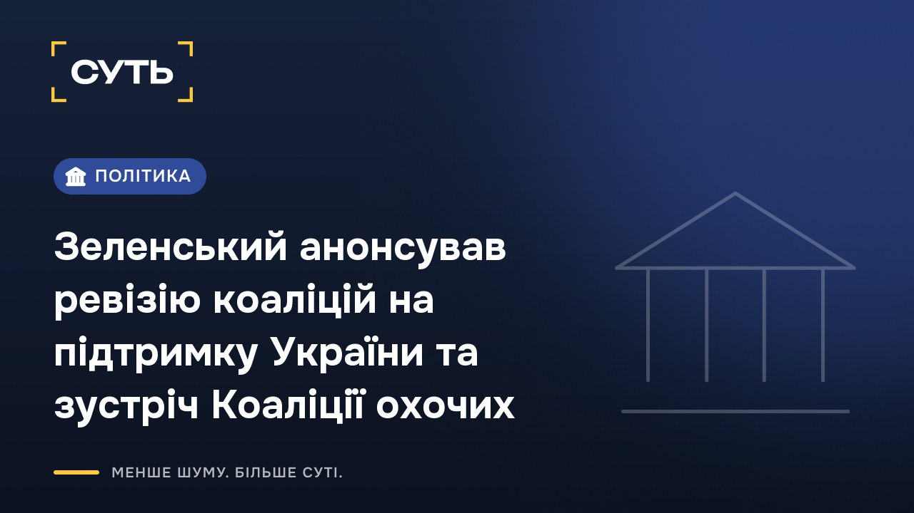

Зеленський анонсував ревізію коаліцій на підтримку України та зустріч Коаліції охочих

Зеленський повідомив про підготовку ревізії коаліцій на підтримку України: за його словами, частина з них лишається пустими. Готується зустріч Коаліції охочих, яку президент назвав можливо історичною. Він також згадав антибалістичну програму «Фрея».
Джерела: Українська правда · Укрінформ · Суспільне
Ця новина — з Telegram-каналу «Суть.»
Коротко, з першоджерел, без шуму.